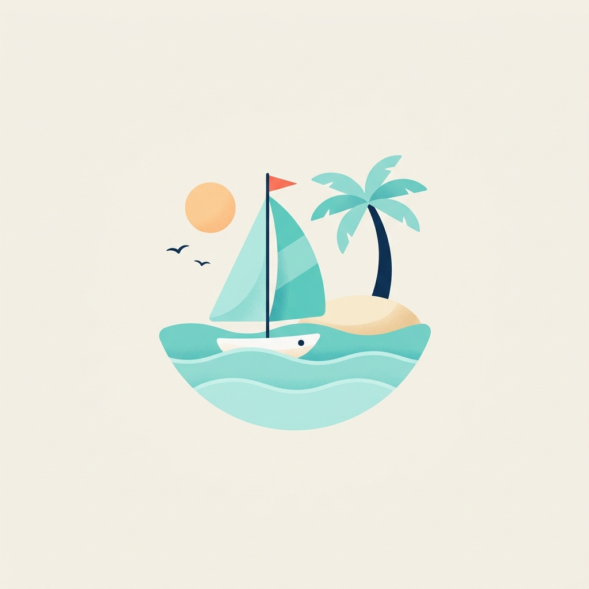
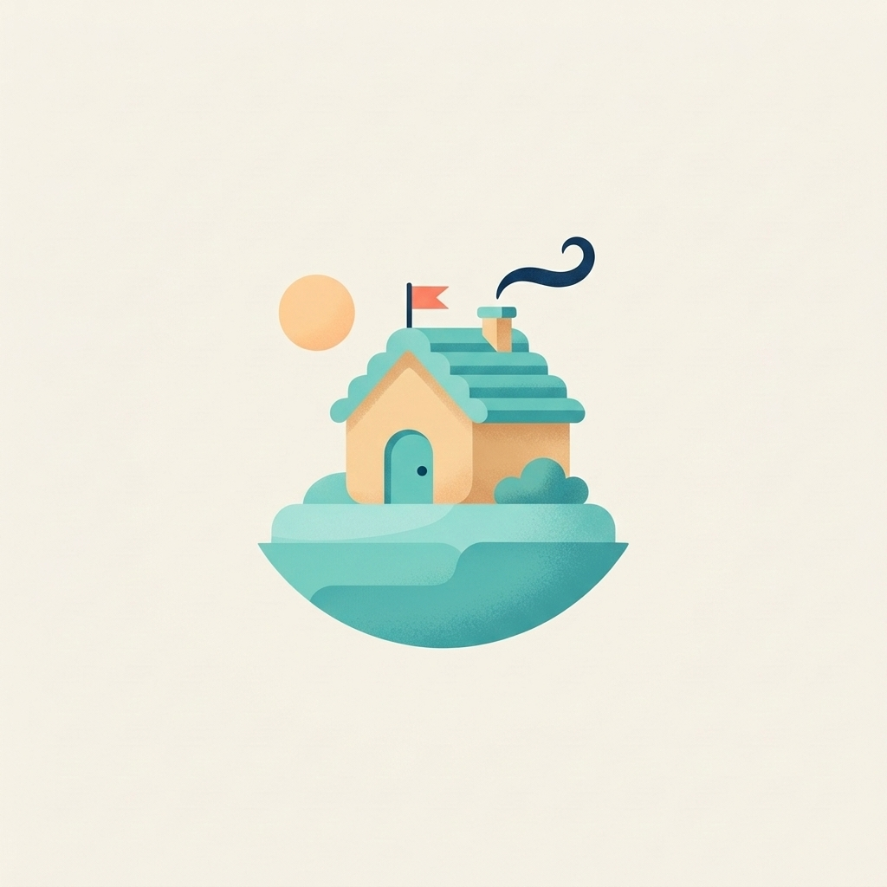
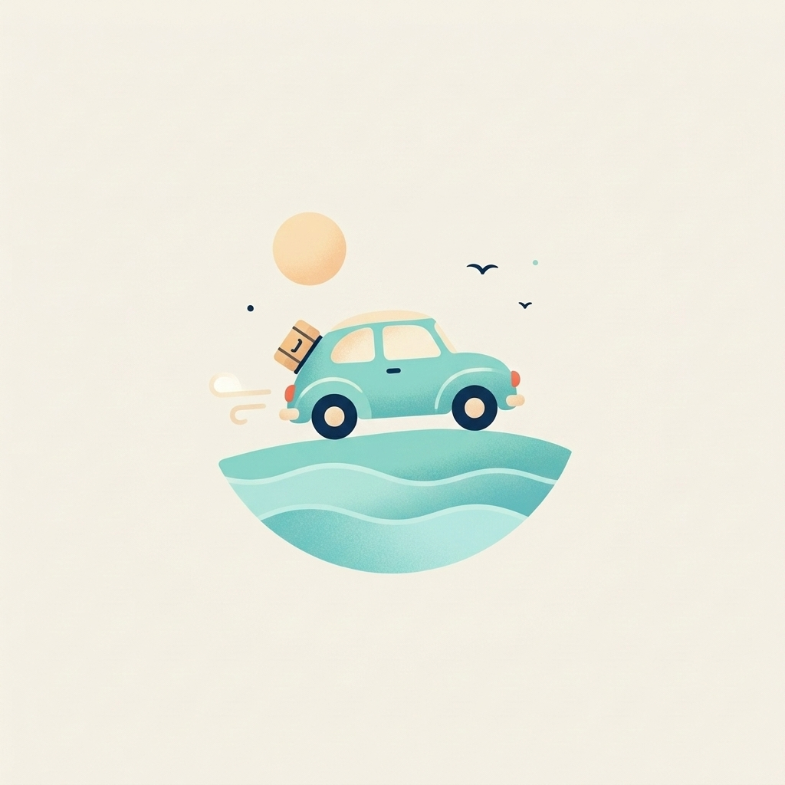
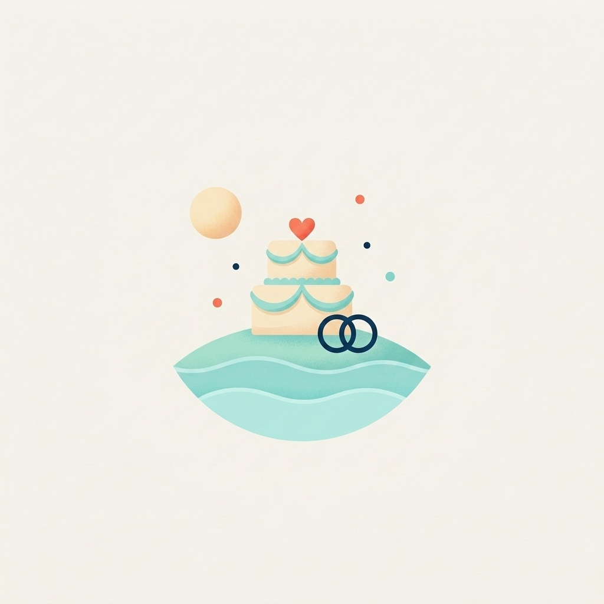
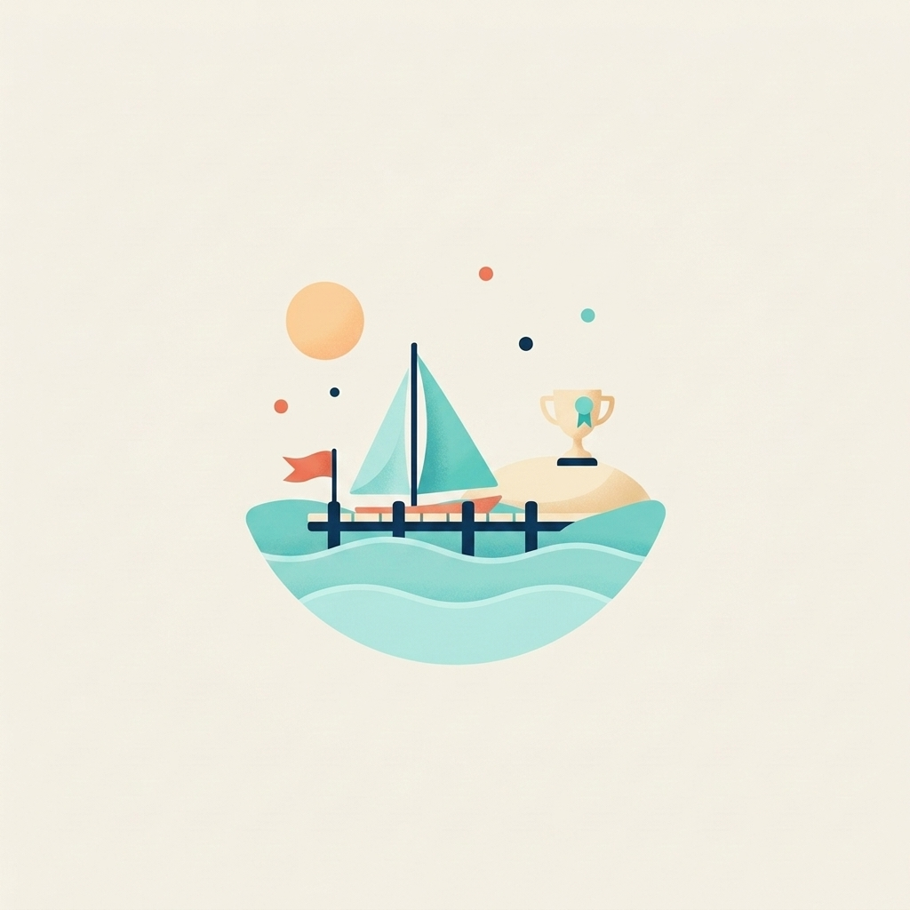

Birikim Hedefi · İllüstrasyon seti
Sekiz görsel, tek el: tatil referans, aynı palet ve doku.

Tatilstil referansı

Ev

Eğitim

Araba

Düğün

Acil durum fonu

Boş durumana sayfa, hedef yok

Başarıhedef kuruldu
Kurgusal senaryo, eğitim amaçlı.